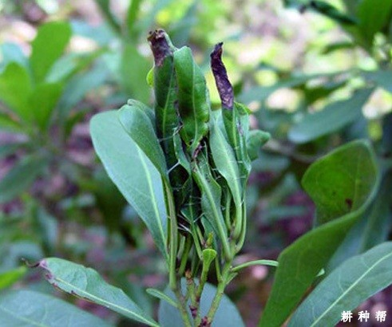
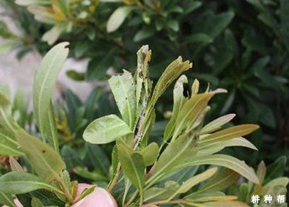
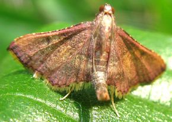

杨梅卷叶蛾又叫卷叶虫，杨梅卷叶蛾对杨梅树有哪些危害？杨梅卷叶蛾一般在什么时候发生？如何防治杨梅卷叶蛾？以下耕种帮就作详细介绍，供网友们参考。

一、杨梅卷叶蛾的危害
杨梅卷叶蛾主要以幼虫在枇杷初展嫩叶端部或嫩叶边缘吐丝、缀连叶片呈虫苞，潜居缀叶中食害叶肉。当虫苞叶片严重受害后，幼虫因食料不足，再向新梢嫩叶转移，重新卷叶结苞为害。杨梅新梢受害后，枝条抽生伸长困难，生长慢，树势转弱。杨梅卷叶蛾危害严重时，杨梅树枝 新梢呈一片红褐焦枯，对杨梅幼树提前结果，早期丰产及产量都有很大影响。

二、杨梅卷叶蛾发生规律
杨梅卷叶蛾一年发生2次，在5月底~6月中旬和7~8月。幼虫头部褐色，身体其余部位青绿色，体长1～2厘米，甚活泼，遇惊迅速向后跳动，并吐丝下垂；老熟后在卷叶内结茧化蛹。

三、杨梅卷叶蛾防治方法
1、低矮树冠的杨梅树上发现该虫时，及时人工摘除卷叶或剪除被害枝梢。
2、在杨梅卷叶蛾幼虫期可喷布80%敌敌畏1000倍液，或10%吡虫琳乳油1000倍液，或20%杀灭菊酯（速灭杀丁）4000倍液等。
3、用糖醋液（红糖5份：黄酒5份：食醋20份：水80份混合）或黑光灯诱杀杨梅卷叶蛾成虫。